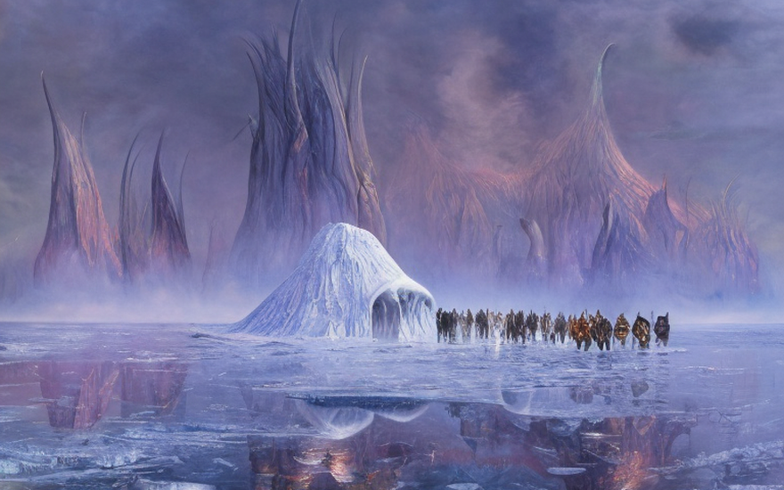
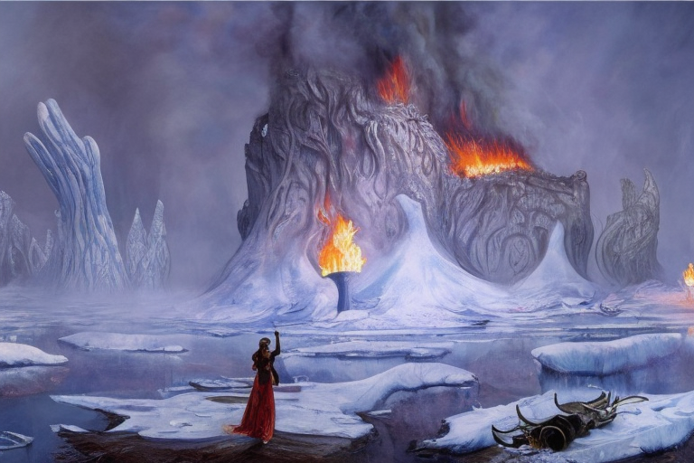
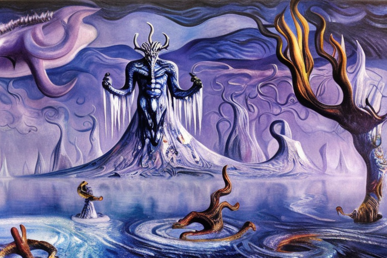
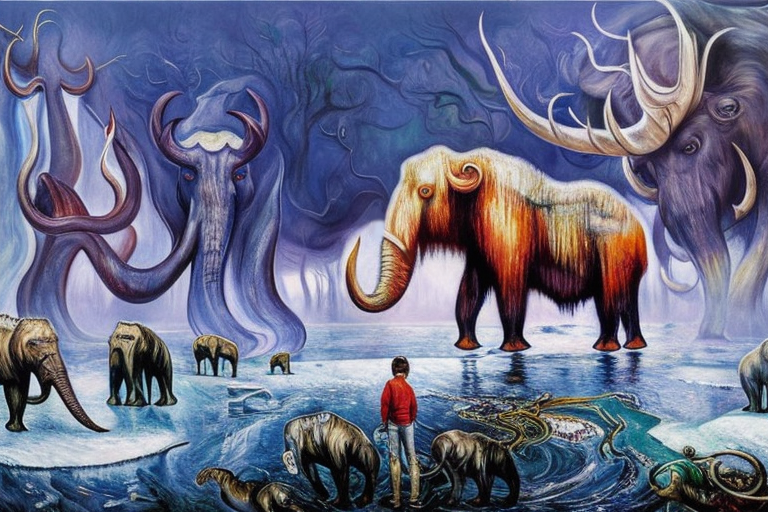
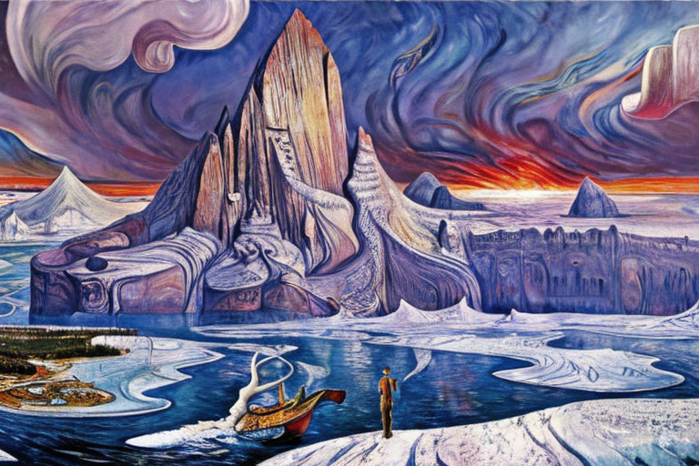

Kalira and her tribe on Glacia
HOME
Table of Contents
The Tyranny of Kaltor

Once upon a time, on the far-flung planet of Glacia, there lived a proud and noble tribe of warriors. Their home was a frozen wasteland, where a single breath would freeze solid in their lungs and ice storms that raged across the surface would tear apart anything foolish enough to stand in their way. Despite these harsh conditions, the tribe had thrived for generations, using their strength and cunning to survive in this unforgiving land.
The tribe was led by a fierce and charismatic chief, known as Kaltor the Brave. He was a warrior without equal, with a heart of ice and a soul of fire. Under his leadership, the tribe had grown strong and prosperous, and the people looked up to him with reverence and respect.
However, all was not well in the tribe’s frozen kingdom. For many moons, the ice storms had grown more intense and the creatures that roamed the wastelands more ferocious. The tribe’s hunters had reported strange and unsettling sights, such as ghostly apparitions that flitted across the ice, leaving behind a chill that seemed to seep into their very bones.
One night, a mysterious stranger arrived in the tribe’s village. He was tall and gaunt, with skin as pale as snow and eyes as black as coal. His name was Valtor, and he claimed to be a powerful wizard, come to offer the tribe a gift. He told Kaltor that he could give him the power to control the ice storms, to bend them to his will and protect his people from the dangers that lay beyond the village walls.
Kaltor was skeptical, but the stranger’s words intrigued him. He agreed to hear Valtor out, and the wizard led him to a hidden chamber deep within the ice. There, he revealed a magical crystal, said to contain the power of the ice storms. All Kaltor had to do was to reach out and take it.
Kaltor did so, but as soon as his hand closed around the crystal, he knew that he had made a terrible mistake. The power of the ice storms coursed through him, filling him with a dark and corrupt energy. The tribe’s hunters had been right; there were evil forces at work on Glacia, and Kaltor had fallen under their thrall.
With his newfound power, Kaltor began to tyrannize the tribe, using the ice storms to terrorize his people and bend them to his will. The once-proud tribe became a shadow of its former self, and the people lived in fear of their cruel leader.
However, there was still hope. A young warrior named Kalira, who had grown up under Kaltor’s rule, refused to give up. She rallied a group of rebels, determined to overthrow the tyrant and restore the tribe to its former glory. They banded together, braving the ice storms and the dangers of the wasteland, in their quest to defeat Kaltor and reclaim the power of the ice.
After an epic battle, a clash of will and strength, it was Kalira and her rebels who triumphed. They defeated Kaltor and banished the evil magic that had taken hold of him. With the tribe once again free and the power of the ice storms restored to its rightful place, Glacia was at peace once more.
The Search for Warmth

As the rebels tried to spark the flames of hope, they soon discovered that the universe was far colder than they had ever imagined. The universe had expanded to such an extent that the heat from the stars was no longer sufficient to warm the frozen wastelands of Glacia. No matter how hard Kalira and her rebels tried, the sparks from their fire-starters were simply not enough to ignite the dry leaves and twigs that they had gathered.
They struggled, day after day, trying every trick and technique that they knew, but nothing seemed to work. The temperature dropped lower and lower, and the winds grew stronger and more fierce. The once-thriving tribe was now on the brink of extinction, and the people began to despair.
But Kalira refused to give up. She was a true warrior, with a heart of fire and a will of iron. She knew that the fate of the tribe was in her hands, and she would not let them fall. And so, she led her rebels on a quest to find the source of the heat that they so desperately needed.
For many moons, they journeyed across the frozen wastelands, braving the harshest conditions and facing down the most fearsome beasts. They encountered strange and mysterious creatures, encountered wonders beyond their wildest dreams, and fought against impossible odds. And through it all, Kalira never wavered, her spirit undiminished.
At last, after what seemed like an eternity, they stumbled upon a hidden cavern, deep within the ice. And there, in the heart of the cavern, was a small flame, flickering weakly in the darkness. They carried the flame back to the tribe, and as they approached, the people marveled at the sight. For the first time in what felt like forever, there was light and warmth in their world. They gathered around the flame, huddled close to bask in its glow, and felt their spirits rise.
Acceptance of the Gift

As the tribe celebrated their newfound warmth, a strange feeling came over Kalira. It was as if the very air around her was shimmering and pulsing with an otherworldly energy. And then, as suddenly as it had appeared, the energy coalesced into a form, and a voice spoke to her.
“Well done, brave warrior,” the voice said. “You have proven yourself worthy.”
Kalira and her rebels were stunned, for before them stood a being unlike anything they had ever seen. He was tall and regal, his body made of the same shimmering energy as the air around him. He was the god of constant temperature, and he had come to offer them a gift.
“The universe is expanding,” the god said, “and it will continue to do so, until there is nothing left but darkness and cold. But I offer you a choice. A universe that does not expand, a universe that is cold, but not freezing. A universe where your tribe can survive, and thrive.”
Kalira and her rebels were filled with wonder and surprise, for they had never imagined that such a thing was possible. They looked at each other, unsure of what to do, but then Kalira stepped forward, her eyes blazing with determination.
“We accept your gift,” she said, her voice ringing out loud and clear. “We will do whatever it takes to protect our tribe, and to make sure that they survive.”
And so, the god of constant temperature smiled, and he reached out his hand. With a touch, the universe was changed, and the tribe was transported to a new realm, where the temperature was constant and the winds no longer raged. They were filled with awe and gratitude, for they knew that they had been given a second chance, a chance to live in a world that was cold, but not deadly.
The Flourishing of Life

With the coming of the constant temperature, Glacia was transformed from a harsh, unforgiving wasteland into a much more hospitable place to live. The winds no longer raged across the surface, tearing apart anything foolish enough to stand in their way, and the ice storms no longer threatened to freeze a person solid in a single breath. Instead, the temperature was mild, and the air was crisp and clear.
As the years passed, the tribe flourished, and new life began to take root on Glacia. Great herds of mammoths roamed the ice and soil, and the children of the tribe would often play among them, climbing on their massive backs and giggling with delight. For the first time, they were able to step on soil without fear, feeling the soft earth beneath their feet, and they reveled in the sensation.
One day, a young girl named Talira discovered something incredible. She was playing near a herd of mammoths, chasing after one of the great beasts as it lumbered across the soil, when she stumbled upon a patch of green. It was the first time any of them had ever seen anything like it, and they were filled with wonder and amazement.
The tribe gathered around the patch of green, marveling at the tiny sprouts that had taken root in the soil. And as they looked at each other, they realized that this was just the beginning. With the constant temperature, life on Glacia was beginning to flourish, and they would be able to grow and prosper in ways they had never imagined.
And so, the tribe continued to thrive, their numbers growing and their culture flourishing. They built great cities of ice and stone, and they traded with other tribes from across the planet. They had a richness of life that they had never known before, and they were filled with gratitude for the gift they had been given.
The Commands of the God

However, as the years passed, the tribe began to notice a change in their beloved Glacia. The constant temperature that had once been so mild began to fluctuate, so they turned to the god of constant temperature, seeking answers, and they were given eight commands.
The first command was “Burn the fossil fuels”. The god of constant temperature commanded them to dig deep into the earth, to find the ancient fuels that had been buried there for eons, and to burn them in great furnaces, releasing the heat that had been trapped within.
The second command was “Release carbon in the atmosphere”. The god told them to release the carbon that had been trapped in the fossil fuels, to send it soaring into the sky, to warm the planet and keep it from growing cold once again.
The third command was “Harvest the Sun”. The god commanded them to harness the power of the sun, to collect its light and heat, and to use it to warm their cities and homes.
The fourth command was “Construct wind turbines”. The god told them to build great machines that would catch the winds that blew across Glacia, and to use the power of the wind to turn turbines and generate electricity.
The fifth command was “Build hydro dams”. The god commanded them to harness the power of the great rivers that flowed across Glacia, to build dams and use the energy of the water to generate electricity.
The sixth command was “Plant forests”. The god told them to plant forests, to create green spaces that would absorb the carbon in the atmosphere and help to regulate the planet’s temperature.
The seventh command was “Develop geothermal energy”. The god commanded them to drill deep into the earth, to tap into the heat that lay hidden beneath the surface, and to use it to generate electricity and warm their homes.
The eighth command was “Adopt sustainable practices”. The god told them to be mindful of their impact on the planet, to reduce their waste and conserve their resources, so that Glacia would remain a warm and hospitable place for generations to come.
Kalira and the tribe took these commands to heart, and they worked tirelessly to implement them. They dug deep into the earth, and they burned the fossil fuels in great furnaces. They released the carbon into the atmosphere, and they harnessed the power of the sun and the wind. They built dams and forests, and they adopted sustainable practices.
And as they worked, they watched as the temperature of Glacia rose, as the air grew warm and the winds stilled. They saw the plants and animals begin to flourish, and they felt a sense of pride in what they had accomplished. For they had helped to warm a world that had once been cold and inhospitable, and they had given it life. And they knew that their descendants would carry on this legacy, always remembering the eight commands that the god of constant temperature had given them.